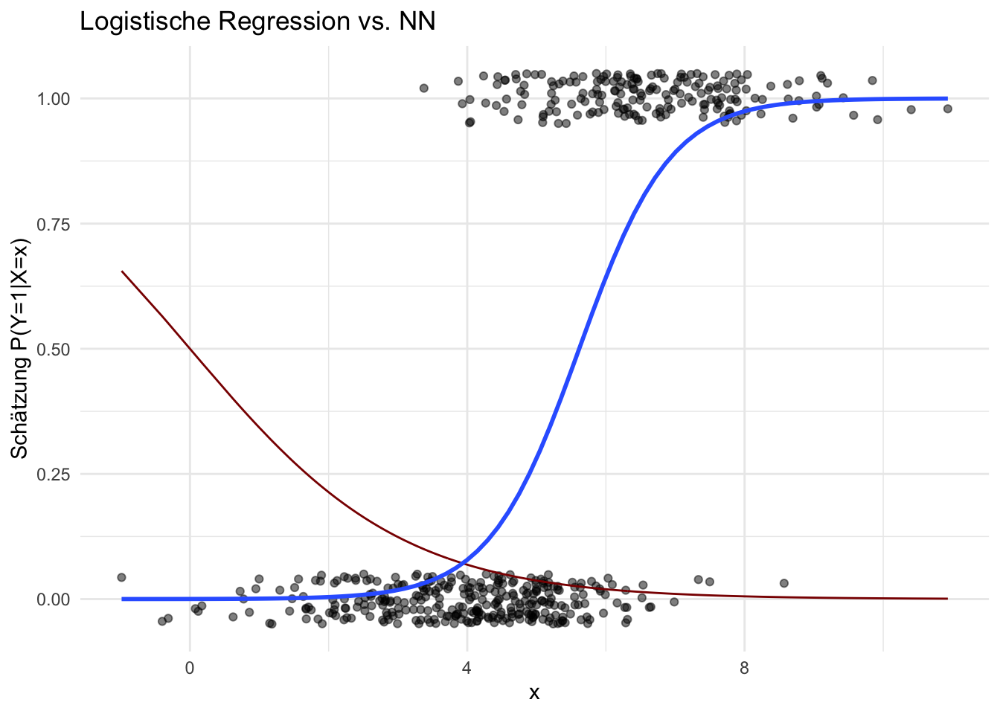
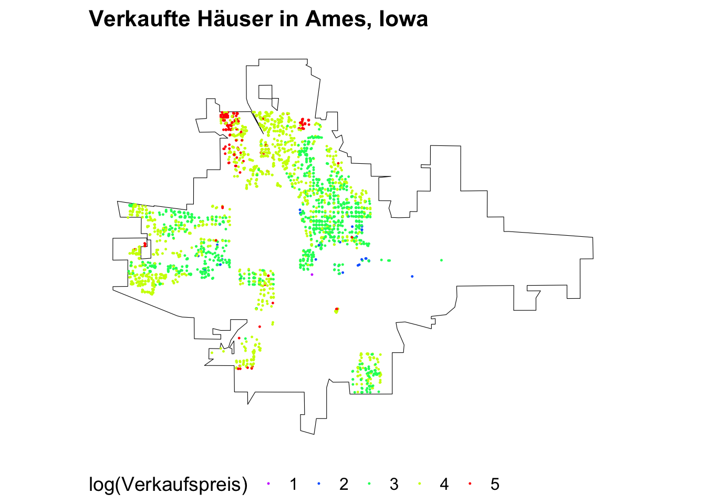
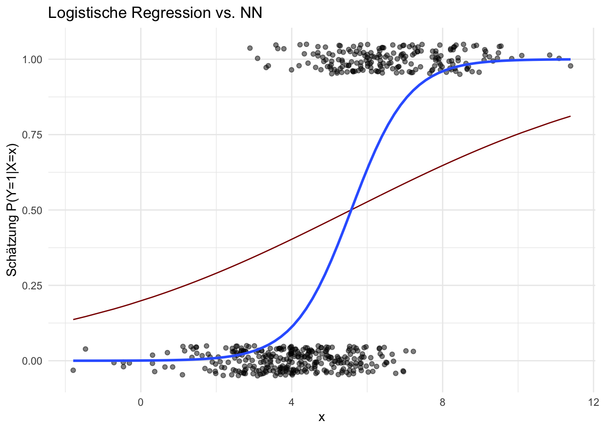
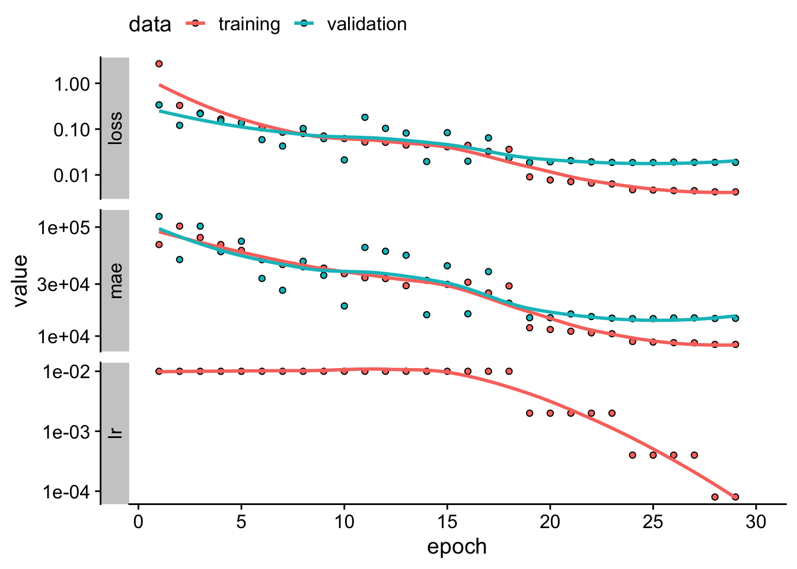

13 Neuronale Netzwerke
Neuronale Netze sind leistungsstarke Modelle, die darauf spezialisiert sind, komplexe Muster in Daten zu erkennen und sind damit insbesondere ein hilfeiches Tool für Prognosen. Ein Nachteil neuronaler Netze ist die mangelnde Fähigkeit, kausale Zusammenhänge zu identifizieren und abzuleiten. Diese Limitation stellt eine signifikante Einschränkung dar, insbesondere für den Einsatz in empirischen Disziplinen, in denen das Verständnis kausaler Beziehungen von entscheidender Bedeutung ist. Während neuronale Netze effektiv komplizierte Strukturen abbilden können, sind sie nicht mit den notwendigen Mechanismen ausgestattet, um Kausalität zu modellieren oder gar zu identifizieren. Grund hierfür ist die fehlende explizite Berücksichtigung kausaler Beziehungen und des zugrunde liegenden datenerzeugenden Prozesses: Neuronale Netze lernen lediglich funktionale Zusammenhänge in den Trainingsdaten. Auch wenn hierdurch komplexeste Relationen abgebildet werden können, erlaubt ein angepasstes Netz keine Differenzierung zwischen einer Korrelation und einer tatsächlichen kausalen Beziehung zwischen Variablen.
In diesem Kapitel erläutern wir die Funktionsweise und Anpassung neuronaler Netze mit Keras und TensorFlow in R und diskutieren deren Anwendung zur Prognose von Zielvariablen in Datensätzen mit vielen Variablen und Beobachtungen.
13.1 Grundlagen und Vokabeln
Neuronale Netze (NN) bestehen aus einer (often großen) Anzahl so genannter künstlicher Neuronen. Ein Neuron ist eine mathematische Funktion, die mehrere Eingaben empfängt, diese unter Verwendung von Gewichten linear kombiniert und eine Ausgabe durch Verwendung einer Aktivierungsfunktion generiert.
Die Neuronen eines NN sind in Schichten (Layers) organisiert. Jedes Layer verarbeitet die Eingabedaten und gibt die Ergebnisse an das nächste Layer weiter, wobei die Neuronen verschiedener Layer miteinander verknüpft werden. Während das Eingabe-Layer (Input) die “Rohdaten” (bspw. beobachtete Regressorwerte) aufnimmt und sie an die erste versteckte Schicht (Hidden Layer) weiterleitet, ist die Hauptaufgabe der Neuronen in den Hidden Layers, komplexe Muster und Merkmale in den Daten zu erkennen und zu verarbeiten. Jedes Hidden Layer transformiert die empfangenen Daten anhand seiner Neuronen, bevor diese an das nächste Layer weitergeleitet werden. Das letzte Layer in einem neuronalen Netzwerk ist das Ausgabe-Layer (Output Layer), das die endgültige Vorhersage für die Outcome-Variable basierend auf den verarbeiteten Daten liefert.
Die Stärke der Verknüpfungen zwischen den Neuronen wird durch die Gewichte \(w\) bestimmt, welche während des Trainingsprozesses angepasst werden, um das Modell hinsichtlich der (Vorhersage) einer Zielvariable zu optimieren. Die \(w\) bestimmen, wie stark die Aktivierung eines Neurons in einer Schicht die Aktivierung der Neuronen in der nächsten Schicht beeinflusst. Das Netzwerk kann so tiefe und abstrakte Strukturen eines Datensatzes abbilden.
Angenommen wir interessieren uns für die Vorhersage einer Outcome-Variable \(Y\) mit den Regressoren \(X_1\) und \(X_2\). Abbildung 13.1 zeigt ein mögliches NN mit 3 Neuronen \(V_1\), \(V_2\), \(V_3\) in einem Hidden Layer. Die Neuronen im Hidden Layer empfangen Eingaben aus dem Input Layer, bestehend aus Beobachtungen der Variablen \(X_1\) und \(X_2\), und gewichten diese Informationen gemäß der Vorschrift
\[\begin{align*} h_i = A\left(\sum_{j=1}^{2} w_{ji} \cdot x_j + b_i\right) \quad \text{für } i = 1, 2, 3. \end{align*}\]
Hierbei sind \(w_{ji}\) die Gewichte der Verbindung von Input \(j\) zu Neuron \(i\) und \(b_i\) ist ein Bias.1 \(A(\cdot)\) ist eine Aktivierungsfunktion, die in Abhängigkeit der zu modellierenden Daten gewählt wird.
1 Der Bias ist analog zur Konstante in einer Regression.
Das Ausgabe-Neuron für \(Y\) verarbeitet die Informationen aus dem Hidden Layer ebenfalls anhand einer Linearkombination, die mit einer Aktivierungsfunktion transformiert wird,
\[\begin{align*} y = A\left(\sum_{i=1}^{3} w_{i} \cdot h_i + b_y\right). \end{align*}\]
Ein solches NN “lernt” Relationen zwischen \(Y\) und den Regressoren \(X_1\) und \(X_2\), indem die Gewichte anhand eines Algorithmus derart gewählt werden, dass der Fehler zwischen den vorhergesagten und den tatsächlichen Werten von \(Y\) — gemessen mit einer Verlustfunktion (Loss-Funktion) — minimiert wird. Dieser Lernprozess erfolgt unter Verwendung numerischer Optimierungsverfahren wie Gradientenabstieg (Gradient Descent).
13.1.1 Training Neuronaler Netze
Der Anpassungsprozess eines NN an einen Datensatz (Training) wird grob durch folgende Schritte bestimmt:
Das Netz (Gewichte) wird initialisiert.
Die Inputs jeder Beobachtung im Trainingsdatensatz werden durch das neuronale Netz geleitet (Forward Pass): Jedes Layer transformiert die Daten mit Hilfe von Gewichten und Aktivierungsfunktionen, um eine Vorhersage von \(Y\) zu erzeugen.
Der Loss wird berechnet, indem die Vorhersage von \(Y\) mit dem tatsächlichen Wert verglichen wird. Die Verlustfunktion wird entsprechend der Definition von \(Y\) gewählt. Typische Verlustfunktionen sind Quadratic Loss (analog zur Schätzung von linearen Regressionsmodellen mit KQ) oder Logistic Loss (analog zu logistischer Regression).
-
Zur Anpassung der Gewichte wird der Gradient2 der Verlustfunktion hinsichtlich der Gewichte des NN ermittelt.3 Ein Gradient-Descent-Algorithmus bestimmt, in welche Richtung die Gewichte verändert werden müssen, um den Vorhersagefehler zu verringern.
Für diese Berechnung wird ein Backward Pass (auch Backpropagation genannt) genutzt. Hierbei wird der anhand des Ausgabelayers ermittelte Loss rückwärts durch das Netzwerk propagiert, um die Gewichte so anzupassen, dass der Fehler bei der Vorhersage von \(Y\) minimiert wird.
-
Die Gewichte werden in kleinen Schritten, die durch die so genannte Lernrate bestimmt werden, in Richtung des negativen Gradienten angepasst. Dies bewirkt, dass die Gewichte so verändert werden, dass der Loss im Vergleich zur letzten Iteration verringert wird.
Um den Lernprozess effizienter und stabiler zu machen, nutzen moderne Algorithmen weitere Schritte, bspw. eine Kombination von Gradientenabstieg mit Momentum. Dies beschleunigt die Anpassung der Gewichte und stabilisiert den Lernprozess. Fortgeschrittene Methoden verwenden adaptiven Lernraten, die die Schrittgröße für jedes Gewicht individuell anpassen können.
2 Der Gradient einer Funktion \(f(\boldsymbol{x}) = f(x_1, x_2, \ldots, x_k)\) ist der Vektor der partiellen Ableitungen: \(\nabla f = \left( \frac{\partial f}{\partial x_1}, \frac{\partial f}{\partial x_2}, \ldots, \frac{\partial f}{\partial x_k} \right)\). \(\nabla f(\boldsymbol{x})\) zeigt die Richtung und Stärke der steilsten Änderung von \(f\) am Punkt \(\boldsymbol{x}\) an.
3 \(\nabla f\) ist in NN grundsätzlich unbekannt. Gradient-Desenct-Algorithmen verwenden numerische Verfahren, um den Gradienten anhand von \(f\) zu approximieren.
Die Schritte 4 und 5 werden wiederholt, bis ein Abbruchkriterium erfüllt ist: Der Fehler ist ausreichend klein, oder weitere Iterationen bewirken keine signifikante Änderung des Gradienten.
Epochen und Iterationen
Der Gesamte Prozess wird für mehrere Epochen (Epocs) durchlaufen, in denen jeweils der gesamte Trainingsdatensatz durch das NN geleitet wird. Um das Training auch für große Datensätze durchführen zu können, werden die Trainingsdaten hierbei üblicherweise in zufällig zusammengesetzen, kleineren Datensätzen (Batches) gruppiert. In jeder Epoche erfolgt die Anpassung der Gewichte für jedes durch das Netz geleitete Batch (jede Iteration):
-
Epoche
-
Batch
Forward Pass \(\rightarrow\) Loss-Berechnung \(\rightarrow\) Backpropagation \(\rightarrow\) Gradient-Descent-Update
-
Batch
Forward Pass \(\rightarrow\) Loss-Berechnung \(\rightarrow\) Backpropagation \(\rightarrow\) Gradient-Descent-Update
…
-
-
Epoche
...…
Für das Training eines NN sind mehrere Epochen notwendig, weil ein einzelner Durchlauf der Daten oft nicht ausreicht, um die zugrundeliegenden Muster zu lernen. Durch Anpassung über mehrere Epochen können die Gewichte des Modells verfeinert werden, was insbesondere die Fähigkeit zur Generalisierung für ungesehene Daten verbessert. Die zufällige Einteilung der Daten in Batches zu Beginn jeder Epoche verhindert unter anderem, dass das NN lediglich die Reihenfolge der durchgeleiteten Datenpunkte lernt.
Die Anzahl an zu durchlaufender Epochen ist ein Tuning-Parameter: Zu wenige Epochen führen zu einer schlechten Anpassung an die Daten, während zu viele Epochen das Risiko von Overfitting erhöhen. Um den Vorhersagefehler für ungesehene Daten einzuschätzen, wird ein Testdatensatz vorbehalten. Dieser Datensatz wird während des Trainings nicht zum Anpassen der Gewichte genutzt, sondern erst nach Abschluss einer Epoche für die Berechnung der Vorhersagequalität herangezogen. So kann jeweils nach dem Durchlauf einer Epoche beurteilt werden, wie gut das Modell auf neue, unbekannte Daten generalisiert. Hierbei können ein hoher Vorhersagefehler für den Testdatensatz und ein (viel) geringerer Fehler für den Trainingsdatensatz nach mehreren Epochen auf Overfitting hinweisen. Im empirischen Teil dieses Kapitels diskutieren wir (grafische) Methoden zur Beurteilung der Anpassung des Modells.
Beim Training von NN können sogenannte Callback-Funktionen eingesetzt werden, um den Anpassungsprozess unter Einbezug von Zwischenergebnissen zu bestimmten Zeitpunkten während des Trainingsprozesses, z. B. am Ende jeder Epoche oder nach einer bestimmten Anzahl von Iterationen, zu evaluieren. Callbacks werden verwendet, um bestimmte Aktionen auszuführen, wie das Anpassen der Lernrate oder das Überwachen der Trainingsleistung: Ein Callback kann das Training automatisch stoppen (Early Stopping), wenn Anzeichen von Overfitting erkannt werden, beispielsweise wenn die Vorhersagegüte auf dem Test-Datensatz über mehrere Epochen hinweg stagniert. Dadurch wird ein unnötiges Fortsetzen des Trainings vermieden und ein Verlust der Generalisierungsfähigkeit auf neuen Daten verhindert.
Wir fassen die wichtigsten Begriffe für die Beschreibung von NN nachfolgend kurz zusammen.
Wesentliche Definitionen
Layer: Eine Ebene von Neuronen im neuronalen Netzwerk. Es gibt das Eingabe-Layer, versteckte Layers (Hidden Layers) und das Ausgabe-Layer. Jedes Layer verarbeitet Informationen aus dem vorangegangenen Layer und gibt die Ergebnisse an das nächste Layer weiter.
Input: Die Eingangsdaten oder Merkmale, die in das NN eingespeist werden. Jeder Input wird durch ein oder mehrere Neuronen im Eingabe-Layer repräsentiert.
Output: Das Ergebnis, welches das NN nach der Verarbeitung der Inputs liefert. Der Output wird durch die Neuronen im Output-Layer des NN erstellt.
Neuron: Die kleinste Komponente eines NN. Jedes Neuron empfängt Inputs, multipliziert sie mit Gewichten, addiert einen Bias und gibt das Ergebnis nach Anwendung einer Aktivierungsfunktion weiter: Ein Neuron ist also eine mathematische Funktion, die Inputs aus dem vorherigen Layer mit einer transformierten Linearkombination verarbeitet und das Ergebnis das nächste Layers weiterleitet.
Forward Pass: Leitung der Trainingsdaten durch das NN und Berechnung der Vorhersage des Outcomes.
Loss-Funktion: Mathematische Funktion, welche die Güte der Vorhersage des NN für das Outcome quantifiziert. Der Loss ist eine Funktion der zu trainierenden Parameter des NN.
Backward Pass / Backpropagation: Ermittlung des Gradienten der Loss-Funktion durch Verkettung des Effekts der Gewichte über die Layers des NN.
-
Aktivierungsfunktion: Eine mathematische Funktion, die auf die gewichtete Summe der Eingaben eines Neurons angewendet wird. Die Aktivierungsfunktion bestimmt, ob ein Neuron aktiviert wird. Beispiele sind
\[\begin{align*} \text{ReLU}(z) =& \max(0, z), \\[.5ex] \sigma(z) =&\, \frac{1}{1 + e^{-z}}, \\[.5ex] \tanh(z) =&\, \frac{e^z - e^{-z}}{e^z + e^{-z}}. \end{align*}\]
Epoche: Ein Trainingszyklus, bei dem der gesamte Trainingsdatensatz, aufgeteilt in Batches, das NN durchläuft.
Batches: Zufällig eingeteilte Teilmengen der Beobachtungen des Trainingsdatensatzes.
Callback: Eine Funktion, die im Zuge der Überwachung des des Trainings-Prozesses automatisch ausgeführt wird, um Aktionen wie Lernratenanpassung oder Trainingsstopp zu auszulösen.
Im nächsten Abschnitt erläutern wir die Optimierung der Gewichte mit Gradient Descent beispielhaft anhand interaktiver Visualisierungen.
13.2 Optimierung mit Gradient Descent
Gradient Descent ist ein iteratives Optimierungsverfahren zur Minimierung einer differenzierbaren Zielfunktion \(f(w)\). Ausgehend von einem Startwert \(w_0\) aktualisiert der Algorithmus die Variable \(w\) schrittweise gemäß einer Lernrate \(\eta\) in die entgegengesetzte Richtung des Gradienten \(\nabla f(w)\) der Funktion an der aktuellen \(w\). Mit \(\nabla f(w)\) wird mathematisch die Richtung des steilsten Anstiegs von \(f(w)\) im Punkt \(w\) ermittelt. Der Algorithmus vollzieht eine Veränderung von \(w\) in die entgegengesetzten Richtung – die Richtung mit dem schnellsten Abstieg (Descent) der Zielfunktion.
Der folgende Algorithmus zeigt die grundlegende Vorgehensweise des Gradientenabstiegsverfahrens für einen einziegen zu optimierenden Parameter \(w\) unter Einbeziehung eines Momentum-Terms \(v_t\).4 Der Momentum-Term dient dazu, das Konvergenzverhalten zu verbessern und lokale Minima effektiver zu überwinden. Die Stärke des Momentums \(v_t\) wird durch den Momentum-Faktor \(\alpha \in [0,1)\) bestimmt.
4 In der Literatur wird \(v_t\) häufig auch als Velocity bezeichnet.
\[\begin{align*} \small & \textbf{Algorithmus: Gradientenabstiegsverfahren mit Momentum} \\ & \textup{Initialisiere: }\\[.5ex] & \quad w_0 \text{ (Startpunkt) }\\ & \quad \eta \text{ (Lernrate) }\\ & \quad \alpha \text{ (Momentum-Faktor) }\\ & \quad v_0 = 0 \text{ (Anfangsmomentum) } \\[1em] & \text{Iteriere für } t = 0, 1, 2, \dots \text{ bis Konvergenz:} \\[.5ex] & \quad \text{1. Berechne den Gradienten: } \nabla f(w_t) \\ & \quad \text{2. Aktualisiere den Momentum-Term: } v_{t+1} = \alpha v_t - \eta \nabla f(w_t) \\ & \quad \text{3. Aktualisiere die Position: } w_{t+1} = w_t + v_{t+1} \\ & \quad \text{4. Überprüfe das Abbruchkriterium } |\nabla f(w_t)| < \epsilon\text{ (für ein kleines $\epsilon>0$)} \\ \end{align*}\]
In der nachfolgenden interaktiven Visualisierung illustrieren wir die Minimierung einer univariaten Funktion \(\color{blue}{f(w_t)}\) nach \(w_t\) anhand des obigen Algorithmus mit Lernrate \(\eta = .001\) und Momentum-Faktor \(\alpha = .925\).
Der Gradient\(\color{orange}{\nabla f(w_t)}\) ist hier die 1. Ableitung von \(\color{blue}{f(w_t)}\) nach \(w_t\). Die Richtung der Änderung von \(\color{blue}{f(w_t)}\) in \(w_t\) wird durch den orangenen Pfeil angezeigt. Beachte, wie sich der Gradient bei Variation des Start-Punkts mit dem Slider ändert. Während die Animation der Optimierung mit Gradient Descent läuft, zeigt der lilane Pfeil das Momentum (Velocity \(v_t\)) für Schirtt \(t\) an.5 Der Algorithmus iteriert die Schritte 1. bis 3. solange, bis das Abbruchkriterium \(|\textcolor{orange}{\nabla f(w_t)}| < \epsilon = 0.001\) erreicht ist, die Änderung in \(\color{orange}{\nabla f(w_t)}\) also hinreichend klein ist, dass ein Parameterwert \(w_t\) mit \(\color{blue}{f(w_t)}\) nahe des (globalen) Minimums von \(f\) plausibel ist.
5 Unterschiedliche Längen der Pfeile zeigen hier nicht Änderungen der tatsächlichen Beträge, sondern dienen lediglich der Interpretierbakeit der Grafik.
Folgende Eigenschaften der Optimierung mit Gradient Descent können anhand der Parameter geprüft werden:
-
Für Startpunkte mit großen Werten des Gradienten beginnt der Algorithmus mit einem starken Momentum: Der Abstieg in Richtung des negativen Gradients erfolgt also in großen Schritten, sodass die Optimierung schneller erfolgt als für Startpunkte in flachen Regionen von \(\color{blue}{f}\).
Dieser Effekt des Momentum auf den Pfad der zu optimierenden Parameter bei Gradient Descent ist vergleichbar mit dem Effekt der Schwerkraft auf eine Murmel, die auf einer hügeligen Oberfläche rollt: Anfangs gewinnt die Murmel an Geschwindigkeit und bewegt sich beschleunigt in Richtung des steilsten Gefälles. In flacheren Regionen wird die Bewegung langsamer und die Murmel kann in Tälern stecken bleiben, ähnlich wie der Optimierungsprozess in flachen Regionen von \(\color{blue}{f}\) langsamer verläuft oder gar stoppt, weil ein Abbruchkriterium erfüllt ist (geringe Änderung des Gradienten). Das Momentum hilft, auch in solchen flachen Bereichen weiter voranzukommen, indem es dem Parameterpfad eine gewisse “Trägheit” verleiht, die es ermöglicht, flache Stellen schneller zu durchqueren und die Optimierung effizienter zu gestalten.
Bei ungünstiger Wahl der Parameter konvergiert der Algorithmus nicht zum globalen Minimum, sondern stoppt im lokalen Minimum bei \(w = -0.5\). Dies unterstreicht die Notwendigkeit, die Hyperparameter Lernrate \(\eta\) und Momentum-Faktor \(\alpha\) sorgfältig zu wählen, beispielsweise indem die Modellgüte nach erfolgter Anpassung für verschiedene Parameter-Kombinationen verglichen wird.
In empirischen Anwendungen ist es für eine hohe Modellgüte eines neuronalen Netzwerks nicht unbedingt erforderlich, das globale Minimum zu finden: Viele Optimierungsprobleme weisen zahlreiche lokale Minima auf, die eine ausreichend gute Annäherung an das Optimum bieten können. Besonders bei hochdimensionalen Optimierungsproblemen mit komplexen Loss-Funktionen können diese lokalen Minima zufriedenstellende Lösungen darstellen. In einigen Fällen existiert möglicherweise kein globales Minimum, und der Algorithmus konvergiert zwangsläufig zu einem stabilen lokalen Minimum, das dennoch eine gute Performance gewährleistet. Daher kann es sinnvoller sein, Algorithmen zu verwenden, die das Erreichen einer robusten Lösung legen, anstatt strikt nach dem globalen Minimum zu suchen.
In Software-Implementierungen für Machine und Deep Learning wie tensorflow und keras werden fortgeschrittene Techniken wie Momentum Tuning oder Stochastic Gradient Descent (SGD) eingesetzt, um die Wahrscheinlichkeit zu erhöhen, dass der Algorithmus nicht in einem (ungünstigen) lokalen Minimum endet. Ein für die Anpassung von NN häufig verwendeter Algorithmus, der SGD verwendet, ist Adaptive Moment Estimation (Adam). Wir verwenden u.a. den Adam-Optimizer in den empirischen Beispielen.
In empirischen Anwendungen sind die zu lernenden Zusammenhänge komplex und damit die Anzahl der zu optimierenden Parameter eines NN häufig groß. Der oben erläuterte Algorithmus für Gradient Descent mit Momentum kann einfach auf Optimierungsprobleme mit \(k\) Parametern generalisiert werden. Dann ist \(\boldsymbol{w}_t\) ein Vektor mit \(k\) Gewichten, \(\boldsymbol{v}_{t+1}\) eine vektorwertige Funktion von \(\boldsymbol{v}_t\) und \(\nabla f(\boldsymbol{w}_t)\) mit Dimension \(k\) und \(f(\boldsymbol{w}_t)\) ist eine Oberfläche in einem \(k+1\)-dimensionalen Raum.
Die nachfolgende interaktive Grafik illustriert Gradient Descent mit Momentum für \(k=2\) zu optimierende Gewichte. Statt der Parameter des Algorithmus kann hier die Form der zu optimierenden Funktion manipuliert werden, sodass bis zu 6 Extremstellen vorliegen können. Der rote Punkt zeigt den Verlauf der Optimierung von \(\boldsymbol{w}_t\).
Die Animation verdeutlicht, dass lokale Minima insbesondere in höheren Dimensionen herausfordernd für Optimierungsalgorithmen sind: Durch Variation der Extrema lassen sich leicht Funktionen \(f(w_1,w_1)\) konstruieren, für die Gradient Descent mit den voreingestellten Parametern nicht gegen das globale Minimum konvergiert, sofern vorhanden. Ein günstiger Initialwert für \(\boldsymbol{w}_t\) kann die Wahrscheinlichkeit von Stops in lokalen Minima verringern: Grid Search Initialization wertet die Funktion über ein gleichmäßiges Gitter von Werten für \(\boldsymbol{w}_t\) aus und wählt als Startwert \(\boldsymbol{w}_{0,\textup{init}}\) den Punkt mit dem minimalen Funktionswert von \(f\) über alle Punkte im Gitter.
13.3 Funktionale Zusammenhänge lernen: Regression
\[\begin{align*} Y = w_1 X + b \end{align*}\]
model <- keras_model_sequential() %>%
layer_dense(
units = 1,
input_shape = 1,
activation = 'linear'
)# kompilieren
model %>% compile(
optimizer = optimizer_adam(learning_rate = 0.01),
loss = 'mean_absolute_error'
)
Call:
lm(formula = y ~ x)
Residuals:
Min 1Q Median 3Q Max
-2.8431 -0.7007 0.0136 0.6558 3.4072
Coefficients:
Estimate Std. Error t value Pr(>|t|)
(Intercept) 5.04094 0.06333 79.6 <2e-16 ***
x 2.99417 0.01103 271.6 <2e-16 ***
---
Signif. codes: 0 '***' 0.001 '**' 0.01 '*' 0.05 '.' 0.1 ' ' 1
Residual standard error: 1.002 on 998 degrees of freedom
Multiple R-squared: 0.9866, Adjusted R-squared: 0.9866
F-statistic: 7.374e+04 on 1 and 998 DF, p-value: < 2.2e-16# Koeffizienten der linearen Regression
coef(lm_model)(Intercept) x
5.040943 2.994166 # Gewichtung und Bias des neuronalen Netzwerks
weights <- model %>% get_weights()
weights[[1]] # Gewichtung [,1]
[1,] 0.4906718weights[[2]] # Bias[1] 013.4 Multiple Regression
# Erstellen und Kompilieren des Modells
model <- keras_model_sequential() %>%
layer_dense(
units = 1,
input_shape = k,
activation = 'linear'
)model %>% compile(
loss = 'mean_squared_error',
optimizer = optimizer_sgd(learning_rate = 0.01)
)# Gewichte und Bias extrahieren
weights <- model %>% get_weights()
weights[[1]] # Gewicht für jede Variablen [,1]
[1,] -0.4610112
[2,] 0.7993697
[3,] 0.4530224weights[[2]] # Bias-Term[1] 0
Call:
lm(formula = Y ~ X)
Residuals:
Min 1Q Median 3Q Max
-3.3129 -0.7286 0.0900 0.7439 3.4086
Coefficients:
Estimate Std. Error t value Pr(>|t|)
(Intercept) 5.01583 0.06843 73.30 <2e-16 ***
X1 2.97449 0.07028 42.32 <2e-16 ***
X2 1.94345 0.07061 27.52 <2e-16 ***
X3 -1.47278 0.06914 -21.30 <2e-16 ***
---
Signif. codes: 0 '***' 0.001 '**' 0.01 '*' 0.05 '.' 0.1 ' ' 1
Residual standard error: 1.079 on 246 degrees of freedom
Multiple R-squared: 0.9271, Adjusted R-squared: 0.9262
F-statistic: 1042 on 3 and 246 DF, p-value: < 2.2e-1613.5 Nicht-Lineare Zusammenhänge
# Erstellen von Trainingsdaten
set.seed(42)
n <- 500
X <- rnorm(n = n, mean = 5, sd = 2) # Regressor
P <- pnorm(-4 + 0.7 * X)
Y <- as.integer(runif(n) < P)# Erstellen und Kompilieren des Modells
model <- keras_model_sequential() %>%
layer_dense(units = 1, input_shape = 1, activation = 'sigmoid')model %>% compile(
loss = 'binary_crossentropy',
optimizer = optimizer_adam(learning_rate = 0.01),
metrics = c('accuracy')
)# Gewichte und Bias extrahieren
weights <- model %>%
get_weights()
w <- weights[[1]] # Gewicht für jede der 5 Variablen
bias <- weights[[2]] # Bias-Term
Call: glm(formula = Y ~ X, family = binomial(link = "logit"))
Coefficients:
(Intercept) X
-8.572 1.527
Degrees of Freedom: 499 Total (i.e. Null); 498 Residual
Null Deviance: 663.1
Residual Deviance: 347.1 AIC: 351.116/16 - 0s - 92ms/epoch - 6ms/step# In einen DataFrame zusammenfassen
results <- data.frame(
Regressor = X,
Actual = Y,
Predicted_Probability = predictions
)library(ggplot2)
# Plot der tatsächlichen Werte gegen die vorhergesagten Wahrscheinlichkeiten
ggplot(
data = results,
mapping = aes(x = X, y = Actual)
) +
geom_point(
position = position_jitter(height = 0.05),
alpha = 0.5) +
geom_line(
mapping = aes(y = Predicted_Probability),
col = "darkred"
) +
geom_smooth(
method = "glm",
method.args = list(family = "binomial"),
se = FALSE
) +
labs(
title = "Logistische Regression vs. NN",
x = "x",
y = "Schätzung P(Y=1|X=x)"
) +
theme_minimal()
13.6 Case Study: Immobilienpreise
library(AmesHousing)
housing <- make_ames()# Load the necessary libraries
library(ggplot2)
library(sf)
library(tigris)
# Retrieve basemap for Ames, Iowa using the tigris package
places_map <- places(
state = 'IA',
cb = TRUE,
progress = F
) %>%
st_as_sf()
# Filter for Ames city
ames_map <- places_map %>%
filter(NAME == "Ames")
houses <- housing %>%
select(Latitude, Longitude, Sale_Price) %>%
mutate(
Sale_Price = cut(log(Sale_Price, base = 2), breaks = 5, labels = FALSE)
) %>%
st_as_sf(coords = c("Longitude", "Latitude"),
crs = 4326, agr = "constant")
rainbow_colors <- rainbow(5, rev = TRUE)# Plot the map with just the outline of Ames
ggplot() +
geom_sf(data = ames_map, color = "black", fill = alpha("black", alpha = 0)) +
geom_sf(data = houses, mapping = aes(color = factor(Sale_Price)), size = .2) +
theme_map() +
scale_color_manual(
name = "log(Verkaufspreis)",
values = rainbow_colors,
labels = levels(factor(houses$Sale_Price))
) +
theme(legend.position = "bottom", legend.direction = "horizontal") +
ggtitle("Verkaufte Häuser in Ames, Iowa")
housing %>%
ggplot(mapping = aes(x = Year_Built, y = Sale_Price)) +
geom_point(alpha = .5, fill = "steelblue") +
theme_cowplot()
# Split the data into training and testing sets
set.seed(1234)
library(tidymodels)
split <- initial_split(housing, prop = 0.8)
housing_train <- training(split)
housing_test <- testing(split)
# Separate the predictors and the outcome
housing_train_x <- housing_train %>% select(-Sale_Price)
housing_train_y <- housing_train$Sale_Price
housing_test_x <- housing_test %>% select(-Sale_Price)
housing_test_y <- housing_test$Sale_Priceblueprint <- recipe(Sale_Price ~ ., data = housing_train) %>%
step_nzv(all_nominal()) %>%
step_other(all_nominal(), threshold = .01, other = "other") %>%
step_integer(matches("(Qual|Cond|QC|Qu)$")) %>%
step_YeoJohnson(all_numeric(), -all_outcomes()) %>%
step_center(all_numeric(), -all_outcomes()) %>%
step_scale(all_numeric(), -all_outcomes()) %>%
step_dummy(all_nominal(), -all_outcomes(), one_hot = TRUE)
prepare <- prep(blueprint, training = housing_train)
preparebaked_train <- bake(prepare, new_data = housing_train)
baked_test <- bake(prepare, new_data = housing_test)
baked_train# A tibble: 2,344 × 190
Lot_Frontage Lot_Area Overall_Qual Overall_Cond Year_Built Year_Remod_Add
<dbl> <dbl> <dbl> <dbl> <dbl> <dbl>
1 1.15 0.350 -0.0340 -0.487 0.843 0.654
2 0.277 -0.0336 -0.800 -0.487 -0.155 -0.839
3 -0.129 -0.0213 -0.800 -1.76 -1.75 -1.66
4 -0.909 -3.19 -0.0340 0.479 0.277 0.365
5 0.407 -0.223 -1.68 1.26 -0.0554 -0.694
6 -1.88 0.0595 1.28 -0.487 1.01 0.847
7 0.407 0.000506 0.655 -0.487 0.943 0.750
8 0.144 -0.377 -0.0340 -0.487 0.910 0.895
9 -0.0461 -1.52 -0.0340 -0.487 0.111 -0.453
10 1.98 0.501 1.28 -0.487 0.876 0.654
# ℹ 2,334 more rows
# ℹ 184 more variables: Mas_Vnr_Area <dbl>, Exter_Qual <dbl>, Exter_Cond <dbl>,
# Bsmt_Qual <dbl>, BsmtFin_SF_1 <dbl>, BsmtFin_SF_2 <dbl>, Bsmt_Unf_SF <dbl>,
# Total_Bsmt_SF <dbl>, Heating_QC <dbl>, First_Flr_SF <dbl>,
# Second_Flr_SF <dbl>, Low_Qual_Fin_SF <dbl>, Gr_Liv_Area <dbl>,
# Bsmt_Full_Bath <dbl>, Bsmt_Half_Bath <dbl>, Full_Bath <dbl>,
# Half_Bath <dbl>, Bedroom_AbvGr <dbl>, Kitchen_AbvGr <dbl>, …library(glmnet)
# Prepare the data for glmnet (which requires matrices)
x_train_glmnet <- as.matrix(baked_train %>% select(-Sale_Price))
y_train_glmnet <- log10(baked_train$Sale_Price)
x_test_glmnet <- as.matrix(baked_test %>% select(-Sale_Price))
# Fit a Ridge Regression model
ridge_model <- glmnet(x_train_glmnet, y_train_glmnet, alpha = 0)
# Use cross-validation to find the optimal lambda
cv_ridge <- cv.glmnet(x_train_glmnet, y_train_glmnet, alpha = 0)
best_lambda <- cv_ridge$lambda.min
# Predict on the test set using the best lambda
ridge_preds_log <- predict(cv_ridge, s = best_lambda, newx = x_test_glmnet)
# Convert predictions back from log scale
ridge_preds <- as.numeric(10^ridge_preds_log)
# Evaluate the performance
mae_vec(
truth = housing_test_y,
estimate = ridge_preds
)[1] 14695.86x_train <- select(baked_train, -Sale_Price) %>% as.matrix()
y_train <- baked_train %>% pull(Sale_Price)
x_test <- select(baked_test, -Sale_Price) %>% as.matrix()
y_test <- baked_test %>% pull(Sale_Price)
network <- keras_model_sequential() %>%
layer_dense(units = 512, activation = "relu", input_shape = ncol(x_train)) %>%
layer_dense(units = 512, activation = "relu") %>%
layer_dense(units = 512, activation = "relu") %>%
layer_dense(units = 512, activation = "relu") %>%
layer_dense(units = 512, activation = "relu") %>%
layer_dense(units = 1)
network %>%
compile(
optimizer = optimizer_rmsprop(learning_rate = 0.01),
loss = "msle",
metrics = c("mae")
)
set.seed(1234)
history <- network %>% fit(
x_train,
y_train,
epochs = 30,
batch_size = 32,
validation_split = 0.2,
callbacks = list(
callback_early_stopping(patience = 10, restore_best_weights = TRUE),
callback_reduce_lr_on_plateau(factor = 0.2, patience = 4)
)
)Epoch 1/30
59/59 - 2s - loss: 2.6759 - mae: 69141.8359 - val_loss: 0.3388 - val_mae: 125313.5078 - lr: 0.0100 - 2s/epoch - 31ms/step
Epoch 2/30
59/59 - 1s - loss: 0.3292 - mae: 102071.5703 - val_loss: 0.1209 - val_mae: 50366.2930 - lr: 0.0100 - 524ms/epoch - 9ms/step
Epoch 3/30
59/59 - 0s - loss: 0.2236 - mae: 80215.3750 - val_loss: 0.2176 - val_mae: 101830.4766 - lr: 0.0100 - 487ms/epoch - 8ms/step
Epoch 4/30
59/59 - 0s - loss: 0.1667 - mae: 69142.9531 - val_loss: 0.1528 - val_mae: 59499.3945 - lr: 0.0100 - 485ms/epoch - 8ms/step
Epoch 5/30
59/59 - 0s - loss: 0.1381 - mae: 61069.4180 - val_loss: 0.1368 - val_mae: 74134.7188 - lr: 0.0100 - 481ms/epoch - 8ms/step
Epoch 6/30
59/59 - 0s - loss: 0.1057 - mae: 50187.8789 - val_loss: 0.0588 - val_mae: 33784.0391 - lr: 0.0100 - 488ms/epoch - 8ms/step
Epoch 7/30
59/59 - 0s - loss: 0.0853 - mae: 45312.9102 - val_loss: 0.0427 - val_mae: 26335.1621 - lr: 0.0100 - 483ms/epoch - 8ms/step
Epoch 8/30
59/59 - 0s - loss: 0.0801 - mae: 43236.3398 - val_loss: 0.1033 - val_mae: 48533.3750 - lr: 0.0100 - 478ms/epoch - 8ms/step
Epoch 9/30
59/59 - 0s - loss: 0.0707 - mae: 41985.2188 - val_loss: 0.0621 - val_mae: 36053.5000 - lr: 0.0100 - 479ms/epoch - 8ms/step
Epoch 10/30
59/59 - 0s - loss: 0.0624 - mae: 37421.0820 - val_loss: 0.0213 - val_mae: 18885.2949 - lr: 0.0100 - 484ms/epoch - 8ms/step
Epoch 11/30
59/59 - 0s - loss: 0.0521 - mae: 34274.8047 - val_loss: 0.1811 - val_mae: 65037.4883 - lr: 0.0100 - 475ms/epoch - 8ms/step
Epoch 12/30
59/59 - 0s - loss: 0.0515 - mae: 33666.2422 - val_loss: 0.1039 - val_mae: 60014.6602 - lr: 0.0100 - 476ms/epoch - 8ms/step
Epoch 13/30
59/59 - 0s - loss: 0.0449 - mae: 28975.7910 - val_loss: 0.0819 - val_mae: 55129.4492 - lr: 0.0100 - 482ms/epoch - 8ms/step
Epoch 14/30
59/59 - 1s - loss: 0.0456 - mae: 32409.0820 - val_loss: 0.0196 - val_mae: 15696.7275 - lr: 0.0100 - 518ms/epoch - 9ms/step
Epoch 15/30
59/59 - 0s - loss: 0.0412 - mae: 29795.2422 - val_loss: 0.0838 - val_mae: 44143.0898 - lr: 0.0100 - 495ms/epoch - 8ms/step
Epoch 16/30
59/59 - 0s - loss: 0.0442 - mae: 31179.7930 - val_loss: 0.0199 - val_mae: 16013.7881 - lr: 0.0100 - 487ms/epoch - 8ms/step
Epoch 17/30
59/59 - 0s - loss: 0.0326 - mae: 24831.5898 - val_loss: 0.0644 - val_mae: 39009.3086 - lr: 0.0100 - 485ms/epoch - 8ms/step
Epoch 18/30
59/59 - 0s - loss: 0.0361 - mae: 28841.9512 - val_loss: 0.0236 - val_mae: 20014.9492 - lr: 0.0100 - 488ms/epoch - 8ms/step
Epoch 19/30
59/59 - 0s - loss: 0.0091 - mae: 11926.6846 - val_loss: 0.0186 - val_mae: 14730.9482 - lr: 0.0020 - 493ms/epoch - 8ms/step
Epoch 20/30
59/59 - 0s - loss: 0.0077 - mae: 11491.7871 - val_loss: 0.0193 - val_mae: 14735.4531 - lr: 0.0020 - 492ms/epoch - 8ms/step
Epoch 21/30
59/59 - 0s - loss: 0.0071 - mae: 11067.1553 - val_loss: 0.0205 - val_mae: 15961.4180 - lr: 0.0020 - 485ms/epoch - 8ms/step
Epoch 22/30
59/59 - 0s - loss: 0.0066 - mae: 10707.5098 - val_loss: 0.0193 - val_mae: 15110.8096 - lr: 0.0020 - 480ms/epoch - 8ms/step
Epoch 23/30
59/59 - 0s - loss: 0.0063 - mae: 10519.0166 - val_loss: 0.0187 - val_mae: 14614.5020 - lr: 0.0020 - 488ms/epoch - 8ms/step
Epoch 24/30
59/59 - 0s - loss: 0.0047 - mae: 8918.0469 - val_loss: 0.0186 - val_mae: 14453.5859 - lr: 4.0000e-04 - 485ms/epoch - 8ms/step
Epoch 25/30
59/59 - 0s - loss: 0.0047 - mae: 8805.7842 - val_loss: 0.0186 - val_mae: 14472.5566 - lr: 4.0000e-04 - 483ms/epoch - 8ms/step
Epoch 26/30
59/59 - 0s - loss: 0.0045 - mae: 8704.9229 - val_loss: 0.0191 - val_mae: 14654.7793 - lr: 4.0000e-04 - 483ms/epoch - 8ms/step
Epoch 27/30
59/59 - 0s - loss: 0.0045 - mae: 8670.8203 - val_loss: 0.0189 - val_mae: 14690.8467 - lr: 4.0000e-04 - 484ms/epoch - 8ms/step
Epoch 28/30
59/59 - 0s - loss: 0.0043 - mae: 8390.0723 - val_loss: 0.0188 - val_mae: 14496.3291 - lr: 8.0000e-05 - 483ms/epoch - 8ms/step
Epoch 29/30
59/59 - 0s - loss: 0.0043 - mae: 8390.3545 - val_loss: 0.0188 - val_mae: 14543.1641 - lr: 8.0000e-05 - 489ms/epoch - 8ms/stephistory
Final epoch (plot to see history):
loss: 0.004258
mae: 8,390
val_loss: 0.01875
val_mae: 14,543
lr: 0.00008 plot(history) +
scale_y_log10() +
theme_cowplot() +
theme(legend.position = "top")